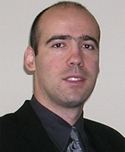

Prof. Yannis Velegrakis
University of Trento
Yannis Velegrakis is an associate professor in the Department of Information Engineering and Computer Science of the University of Trento, director of the Data Management Group, coordinator of the Data and Knowledge Management Research Program, and coordinator of the EIT Digital MSc Program in Trento.
His research area of expertise includes Big Data Understanding, Social Data Analysis, Knowledge Discovery, Big Data Management & Analytics, Highly Heterogeneous Information Integration & Data Exchange, User-centric Querying Techniques for Massive Heterogeneous Datasets, Personalization & Recommendation, and Data Quality. He holds a PhD degree from the University of Toronto and a MSc. and BSc. degree from the University of Crete, all in Computer Science. Before joining the University of Trento, he was a researcher at the AT&T Research Labs. He has spent time as a visitor at the IBM Almaden Research Center, the Center of Advanced Studies of the IBM Toronto Lab, and the University of California, Santa-Cruz. He has served in program committees of many national and international conferences and has been a reviewer for numerous international journals. In 2013, he served as the general chair of VLDB.

University of Trento
Via Sommarive 9
38123 Trento
Italy
 +39 (0461) 283986
+39 (0461) 283986 +39 (0461) 287022
Via Sommarive 9
38123 Trento
Italy
| vel | gias@ | disi.unitn.eu |